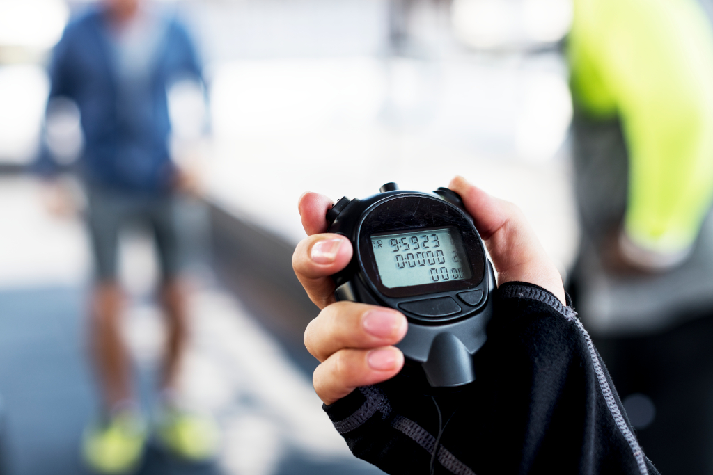

Découvez les outils d'entraînement
Ces outils permettront de vous aider à vous entraîner et à suivre vos progrès.

GPS
Calculez vos kilomètres parcourus avec l'application GPS.

Chronomètre
Entraînez-vous avec l'application chronomètre réglable pour chaque tour d'entraînement.

Calculateur d'IMC
Découvrez notre application calculateur d'IMC pour connaître votre indice de masse corporelle.
Calculateur de calorie
Découvrez notre application calculateur de calories.

Suivi du poids
Découvrez notre application suivi du poids.